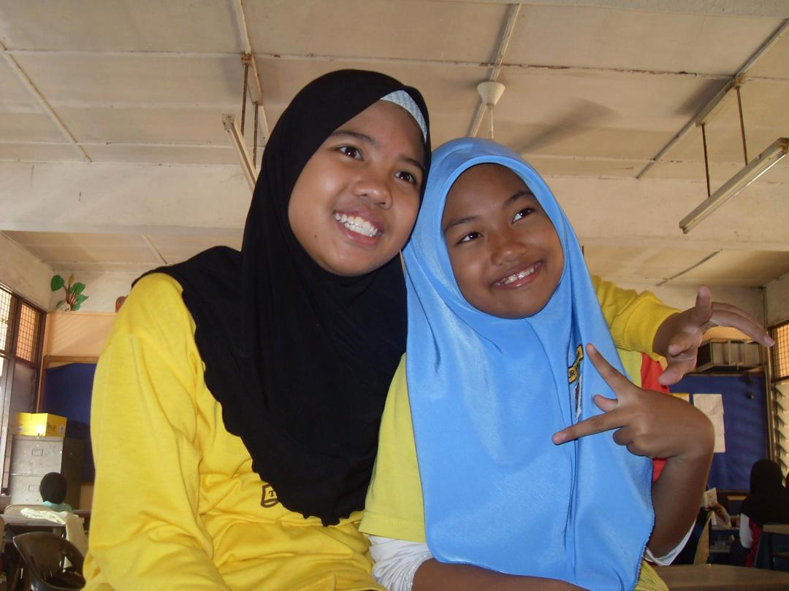
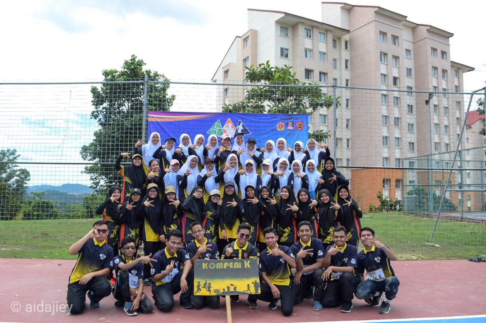

Farhana's Web Resume!
 |
|
 |
|
 |
|
 |
|
 |
|
EXPERIENCE
Experience in Position

Prefect
(standard 3-6 and form 1-2)
I was a prefect back then when I was in primary school for 3 years and 2 years for secondary school. Being a prefect is not easy because in order to be a good role model to the students, i need to be a good one first, such as my discipline, my time management, my leadership, my patient and others.
Experience in Competition

Nasyid
standard 5
I joined Nasyid competition when i was 11 years old, and me and my team won a second place and it is quite fun to take part in that competition.
Experience in Competition

Bicara Berirama
matriculation
I take part in bicara berirama with my classmate and we won the first place. That was my first time performing at matriculation.
Experience in Competition

Choral Speaking
matriculation
I take part in choral speaking with my classmate and we won the first place. That was our second time winning competition that our matriculation did.
Experience in Participation

Kesatria Youth Challenge
University
I joined Kestaria marching competition in university for my curriculum. At first I joined it just because I do not want to get participated in the last assessment in my curriculum but unexpectedly I enjoyed the competition because I got to know a lot of people, make new friends, and i learned how to be responsible, discipline, and what is teamwork was during the training. I really had fun with my team because they are fun to be friend with.

CONTACT

011-36292217


© Copyright Version by Siti Nurfarhana Binti Mohd Fuat | About Me
Last update: 16 June 2020